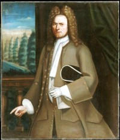

by
Stefan Bielinski
Johannes Ten Broeck was born about 1683. He was a younger son in the large family of Albany founders Dirck Wesselse and Catharina Van Buren Ten Broeck. He grew up in his father's landmark Albany house and at their farm on the Roelof Jansen Kill.
In June 1709, he married Elizabeth Wendell at the Albany Dutch church. That marriage appears to have been childless and Elizabeth died after only a few years. In June 1714, Johannes married the somewhat younger Catharina Van Rensselaer - a daughter of the lower manor. By 1733, that marriage had produced thirteen children who were christened at the Albany church where their parents were members and frequent baptism sponsors.
These Ten Broecks lived in Albany's first ward. In 1715, Johannes was a member of Johannes Schuyler's Troop in the Albany County Militia. In 1720 and 1742, he was identified as a freeholder living in Albany's first ward.
In 1715, he was named in his father's will to inherit a number of houses, lots, and tracts of land. Following the death of Dirck Wesselse in 1717, his aged mother lived with him in Albany but probably in her State Street house. His patience was rewarded a decade later when the death of his mother placed him in charge of a great estate consisting of an array of valuable properties.
In August 1737, he was contracted by the corporation to build a bridge on Yonkers Street.
His substantial wealth was based on management of family real estate assets, trading, and practice of the weaver's crafts - as he was listed on the census of householders taken in 1756. As late as 1764, Johannes or his namesake nephew was identified as a merchant.
He was an active member of the Albany community and held a number of civic offices beginning with an appointment as firemaster in 1712. In 1715, he was elected first ward assistant alderman. In 1723, he first was elected alderman. He held that office for many years until he was named city treasurer or chamberlain in 1740. In 1751, he received a share of the license to operate the cross-river ferry.
However, family-based information (and as yet unverified) tells us that these Ten Broecks came to New Brunswick, New Jersey about 1720. In light of a full life in Albany for four or more decades, perhaps they were visitors or seasonal inhabitants there.
In 1765, he stated that he was about eighty-two years old when questioned about an incident that occurred in Albany more than fifty years earlier. Johannes Ten Broeck died some time thereafter.
Portrait: painted by Nehemiah Partridge about 1720.
Copied from Wiki
Tree. Originally from the Runk family
collection. Resides today at the Philadelphia
Museum of Art. See also fair use.
 Sources: The life of Johannes Ten Broeck is CAP biography number 52. This sketch is derived chiefly from family and community-based resources. He is often confused with his kinsman and contemporary - Johannes Ten Broeck (1686-1775) of Kingston.
Sources: The life of Johannes Ten Broeck is CAP biography number 52. This sketch is derived chiefly from family and community-based resources. He is often confused with his kinsman and contemporary - Johannes Ten Broeck (1686-1775) of Kingston.
first posted 10/30/05; updated 8/25/17